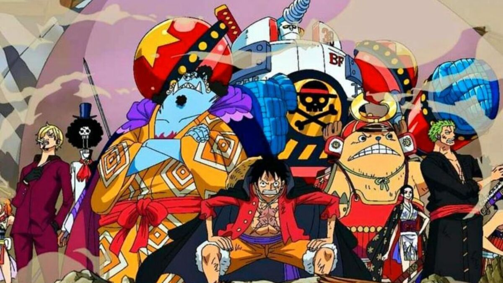

résumé de One piece

"One Piece" est un manga et une série animée japonaise créée par Eiichiro Oda.
L'histoire suit les aventures de Monkey D. Luffy, un jeune homme qui rêve de devenir le
Roi des Pirates en trouvant le légendaire trésor connu sous le nom de "One Piece".
Pour atteindre son objectif, Luffy assemble un équipage hétéroclite, composé de
personnes aux compétences uniques et variées.
Au fur et à mesure de leur voyage à travers Grand Line, un océan rempli de dangers et
peuplé de pirates redoutables, d'îles exotiques et de mystères, Luffy et son équipage
affrontent de puissants ennemis, découvrent des secrets ancestraux et nouent des
alliances improbables. Parmi les thèmes principaux de l'histoire, on trouve l'amitié, la
détermination, le courage et la liberté.
L'univers de "One Piece" est vaste et complexe, regorgeant de personnages
charismatiques, de combats épiques, d'histoires émouvantes et de rebondissements inattendus.